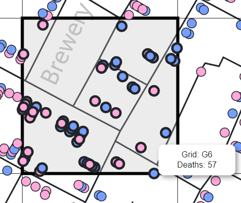
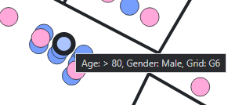
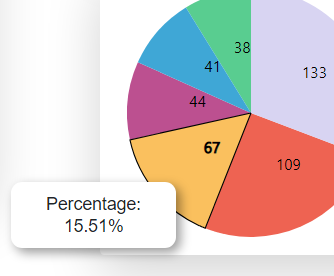
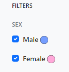

Project Documentation
First things first
Before I can start creating an ideal layout for the visualizations, I would have to learn D3 first. My plan was to familiarize myself with it as quickly as possible and push the design phase to a later time when I was more accustomed to the library. The best way to do this was to just start and try to get example charts on an HTML page. I had a number of resources available to me such as the lectures, the book Interactive Data Visualization for the Web, and other supplementary online resources such as D3's official Github documentation and D3 in Depth. All of these resources combined would allow me to get a basic understanding of the D3's capabilities.
Data
Once I got some working knowledge with D3, I started off the project by getting familiar with the data sets, and what relationships can be drawn from the different files.
The streets.json and pumps.csv data were straightforward as they are just coordinates, but deathdays.csv
and deaths_age_sex.csv were a bit more complex. Regardless, the data sources were all loaded in using the appropriate D3 methods. Also, later on in the process, additional coordinate data sources were created for street labels and building names.
Layout
I started the layout design process by determining the project requirements. There was a need for multiple visualizations, but the interactive map was the main component. It also had to be dynamic, via filtering and various user inputs. Hence, there was a need for form components such as checkboxes and range sliders. To quickly produce an HTML page to contain the visualizations and and iterate through mock-ups, I used the front-end web framework Bootstrap. After going through a few versions, I decided on a simple dashboard page with a sidebar that contains the form controls. The main part of the page will contain the visualizations and the user will be able to scroll down if needed. Early in the process, I wasn't sure how the SVGs would scale and how much room I would need, so left as much space on the main part of the page as possible.
Visualizations
The project required a few different visualizations that D3 would be used to render:
-
The interactive map would be a combination of streets drawn using
paths, the death indicators and pumps usingcircles, and the aforementioned street labels and building names usingtext. - Pie charts for representing the sex and age distribution of the data.
- Lastly, a bar graph to visualize deaths per day.
Please refer to the script file to see the respective render functions used for each visual.
Interactive Map
Laying out the map was a straight forward process. One of the most important things to remember was to use the same multiplier when it came to scaling the map unto a larger canvas area. I played around with a few values and found one that fits a good portion of the screen on desktop. I also gave it enough padding to account for interactivity such as dragging and zoom.
Furthermore, deciding on the color indicators for sex was also straight forward. Blue and pink are the most commonly associated colors to the two respective sexes, and so I wanted to keep it simple. The pumps are just larger scaled circles, and I used an orange color to associate it with danger. Added on are a few of the major street names and buildings in close proximity to the outbreak. Coordinate positioning for each label was manually calculated with the help of a copy of the original map.


Pie Charts
Starting with the Sex Distribution chart, I brought over the same colors I had used on the map to maintain consistency. Viewers would be able to easily associate the number with either sex strictly based on the color even if the legends weren't there.
For the Age Distribution chart, it was a bit more tricky. I knew I needed a wide range of colors with enough contrast for viewers to easily differentiate between the more compressed pie slices. The legends table was also more necessary as packing them inside with the number labels would've caused poor readability. I also explored the possibility of a bar chart in place of a pie chart, but opted against it since I wanted to save the bar chart for the Deaths per Day graph. In hindsight, this may have been the better option.
Deaths per Day Bar Graph
This bar graph was, for the lack of a better word, cumbersome to render. The issue stemmed from the number of days that would have to be rendered. I debated numerous times whether I should leave out each individual day ticker and opt for a incremented approach. I also had to think about which axis the days should go on. On top of all those things, there was a wide range for the number of deaths. Ensuring values on both extreme ends were accurately depicted was a main focus. I also decided to use a color gradient based on red to depict death.

Interactivity
Looking at the project requirements, the following functionalities were needed: zoom, drag, filtering by various categories, a date range slider, and a grid. From a programming standpoint, I opted not to rely on D3's built-in filtering abilities, and instead used custom vanilla Javascript functions that I wrote. Once the data was loaded in, the map and graphs were still drawn using native D3 functions. From that point on, custom event listeners for all the appropriate SVG elements would produce different effects such as toggling visibility, grid positioning, counting deaths, and showing tooltips on hover.
Zoom
Zoom was implemented using a D3 module called d3.zoom. It gives the user the ability to take a closer look at the map data and enhances input precision. This works great with both the grid tools and the tooltips that activate on hover.

Grid Tool
The grid tool is a toggleable interactive feature that allows that user take a closer look at any specific grid. Once toggled on, the user can hover over any part of the map and a tooltip will provide additional information such as death counts local to that grid along with the grids position.
Tooltips On Hover
Tooltips are a quick way of providing additional information on hover without adding more visual clutter. The pie charts, death and pump circles, and bar graph have this. Although styled differently, most of the tooltips contain data specific to the element being hovered over. As shown below users can learn a lot about a person's sex, age range, and grid.
 Filters
Checkboxes provide a quick way to filter through the data based on several categories such as sex and age range. The filters are useful for reducing visual clutter and making the deaths marked on the map easier to identify. Ultimately, it gives the user a lot of control over what they want to see.
Date Range Slider
The slider provides a way to create a range up to the selected date. It works in tandem with the filters and only applies to those categories currently checked. It also provides additional information such as total death count, time elapsed, an average deaths per day.

Click Events
A click event is present for each of the bars on the deaths per day bar graph. When a specific bar is clicked, it essentially acts a range selector, and alters the map data up to that date/bar selected. The pie charts and all other counters get updated as well. Make sure to scroll back up to see the changes.
Github
This project is hosted in GitHub Pages, and the source code can be also be found in GitHub.